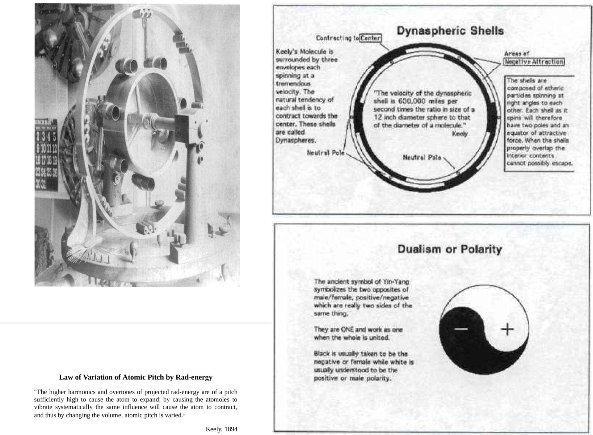

内环 7 管全调 B♭（那个「7」是空间七重对称，角向谱 m=7）； 外环 8 套 × 3 管 = 24 管，跨 3 个八度（那个「8」是 m=8）。 7 与 8 互质 ⇒ 两族在 m<56 内完全不重叠 ⇒ 打不成一致 ⇒ 球被迫旋转。 8 个外振子各驱动一束 3 管，一个振子输出 3 个频率的复合波 —— 所以只要 8 个，不必画 24 个。
—
带红点的 m 与当前目标同族：相位完全一样，会被一起激发， 只能靠频率分开。任何一个 m 都能配出相位（φᵢ = m·αᵢ），没有「激不出来」的 m。
相位只能选中一整族 m（同族之间频率不同、相位完全相同）。要把目标 m 单独留下， 唯一手段是把激励频率调到 fm。所以「同族最近 m」那一栏的频率比就是滤波难度。
打开「合成」后可多选 m 叠加（最多 9 个）。注意：不同 m 的本征频率差 f∝j²， 真实薄板不能同时共振——这一档是几何叠加的可视化，不是物理可实现的同时激励。
m 已开到 25，但频率随 j² 涨得很快：m=25、s=1 的 j=30.779， 比 m=0 的 2.405 高 (30.78/2.405)² ≈ 164 倍。默认那块薄板本来只有几百 Hz， 这一档就到 kHz 量级，已经越过本页「Kirchhoff 薄板 + 不计空气负载」的假设 —— 图上能画、节线位置还是对的，但频率与辐射效率别当真。
m 大 ≠ 看得清：相邻节径只隔 R/m（默认盘 R=150 mm、m=25 ⇒ 6 mm），
而沙粒是在节线附近随机扩散后才落定的 —— 到 m ≳ 15 盘面就糊成放射状纹理了。
这不是渲染 bug：把沙粒数调小、或切到箭头层，节线立刻清楚。
七组「一键组合」的默认口径是 N = 组内最大 m。所以按下任何一组，
组内最大那一支都是退化档（N | m ⇒ 振子全部同相、合力 N·F ≠ 0）；
其余 m 不是全同相（相位类数 = N/gcd(N,m)）。下面 nCombo 那行会实时把实际类数算给你看。
—
—
为什么「独立类数 = ⌊K/2⌋+1」：K 个等隔点上，
cos(mθ) 与 cos((K−m)θ) 采到的是同一组数——
在 K 点阵上这两个 m 无法区分。所以 m 与 K−m 必须并成一类。
K=3,4,5,6,7 分别给出 2,3,3,4,4 类（这正是对话里那串数字，复现了）。
K 越大，类越细，能分辨的 m 越多 —— 这确实是「多振子更好」的理由之一。
但「多」不等于「对」：K 一旦整除 m（尤其 K=m=7），相位全部退化成 0°，
反倒把 m=0 一起激发。类数多寡和「能不能锁住 m」是两件事，见上面那条判定。
δ = 0 时选择性最好。δ ≠ 0 破坏选择定则：泄漏量 |cm|/N 达到 2% 的异族模态会被真的加进场里 （面板「参与模态」会列出）。同族那些（相位上本来就分不开的）不画进场 —— 它们靠频率滤掉， 滤波难度就是上面「同族最近 m」那一栏。这是真失谐；整体平移所有振子只是转个角度，不影响任何 m。
一句话：形状由「板的哪个特征模态」定，N 只管「能不能用相位把这个模态挑出来」。
页面的场是 u = Σ_m |c_m|/N · J_m(k_mρ) · cos(mθ+ψ_m)，其中
c_m = Σᵢ e^{i(m₀−m)·2πi/N}。δ=0 时这是一个纯选择函数：
只有 m ≡ m₀ (mod N) 的项非零，而这一整族又被「交给频率」排除
⇒ MT 里只剩目标 m₀ 这一项，振幅恒为 1、相位恒为 0。
所以改 N，u(x,y) 逐点相同（下表 max|Δu| 全是 0），
变的只有三样：振子红点的个数、同族表、相位纯度读数。
| N | 场里模态数 | max|Δu| vs N=2 | 同族 m>12 |
|---|---|---|---|
| 计算中… | |||
把 δ 挪开一点，表里立刻出现非零：泄漏振幅是
|c_m|/N = 2|sin((m₀−m)δ/2)| / N。
但「N 越大泄漏越小」是错的 —— 本机实测：δ=3° 时 12 个 N 的
max|Δu| 全在 1.2–1.6×10⁻¹，几乎不随 N 变（N=3 是 1.28e−1、N=15 是 1.28e−1）。
原因是分母那个 N 被分子抵掉了：最近的非同族 Δm 随 N 一起变大，
sin(Δm·δ/2) ≈ Δm·δ/2 ∝ N ⇒ 两者相消。
所以 δ 给的是「绝对泄漏量」，只有把 δ 本身收小才减得下来；
改 N 只改「谁被泄漏进来」和「同族有几个」，不改泄漏多少。
要看见图纹变，只有两条路：
① 改 m（角向阶，瓣数 = 2m）；
② 改驱动频率落在哪个特征频率（径向阶 s，在「盘」那一节里选：s=1/2/3/4 →
内部同心节圆 0/1/2/3 个，波数 kz = jm,s）。
⚠ 改 s 之后七管的腹点半径也由 j′m,s/jm,s 决定，
原来的 0.77R 只对 s=1 对（s=2 起管子会离开腹点、耦合数直接掉下来）—— 面板里的耦合 g 是现算的，掉了一眼能看见。
真实薄板上多振子也改不了这一条：多个同相驱动叠加 = 一个等效驱动，
只有相位递进（φᵢ = m·αᵢ）才能合成角向模态，而 N 只是这条相位序列的采样点数 ——
采样点数不改变被采样的那条曲线，只改变「能不能无混淆地表示它」（m < N 才不混）。
所以「N 从 3 调到 12，图纹没变」不是 bug。 反过来，如果你看到图纹随 N 变，那说明场里混进了不该有的模态 —— 第一嫌疑是 δ≠0 的泄漏（表里 diff 非零），第二嫌疑是查表插值。
行波相位沿方位角线性递增，节线不停在原地 —— 沙聚不起来，只能看。要撒沙出图，必须驻波。
f = m²/(2πa²)·√(D/ρh)，纯周向近似，忽略径向节点，只作量级参考。
不要用 C(m+2n)² 算 Hz（m=n=0 时它给 0，且本目录实测套 15 格比值散在 1.77–3.67）。
整张表运行时求根（先扫 |Jm(kz·ρ)| 定位峰在哪一瓣， 再解 Jm′=0 精修），不是手抄常数 —— 换 m、换 s、换半径 a 都会重算。 压电片贴哪、七管管口放哪、3D 圆环画哪，都该按这一圈；放到节圆上耦合会掉到 0 附近。 m=0 那一行的峰在盘心（ρ=0），不是环，表里 0 就是真的 0。
m 大时的渐近：1 − ρ_peak ≈ 1.05·m^(−2/3)（一路挤向盘边，收敛很慢，
实测核对到 m=30）、峰值高度 ≈ 0.675·m^(−1/3)（越来越矮）。
两个方向同时恶化 ⇒ 想要「驱动强 + 位置靠内」，只有小 m；而小 m 没有七重对称。
这就是「七重对称」与「能量聚到内圈」不可兼得的量化形式。
两种身份，物理含义正相反 —— 别拿其中一档的读数去论证另一档。
① 实心盘 ⇒ 干砂。整块盘面都在振动，砂被抛起、落到振幅低的地方就停住，
所以能堆出锐利的节线。这是标准 Chladni 图纹的成因，砂有落脚点。
② 空心环 ⇒ 理想空气示踪粒子。中心那块盘面（r < holeR ≈ 0.554R）不存在，
砂在那儿没有落脚点，真砂会直接掉下去。留着白点只为把图纹读出来：它们浮在盘面以上的空气里，
跟着板面近场的速度场漂，所以孔洞上方照样有（空气在那儿是有的）。
⚠ 这是可视化装置，不是「砂能浮在环中间」的物理预测。孔里的白点在画面上被压到
0.42 的亮度 —— 就是提醒你它在空气里、不在盘上。
两档的机制真的不一样，不是换了个标签：
· 法向汇聚砍到 0.45：干砂是被盘面法向加速度甩起来、落到低振幅处停住的；
示踪粒子没有接触面，推它的是近场声流，只在低振幅带汇聚，力小一档。
· 沿节线的切向滑移 ∝|∇u|：这是「落不下来」的核心 ——
指向节线的单位矢量左转 90°，就是沿等振幅线（沿节线）的方向。
干砂在节线上会停；示踪粒子在节线上会顺着线流。
· 抖动地板 0.45（与档位无关）：默认「理想沙粒」的抖动是 0，
乘任何系数都还是 0（第一版就栽在这，两档看着一样）；空气里的点本来就有湍流。
· 切到空心环会自动回「物理」档：轨迹示意档（摆线）是解析曲线，
3200 粒锁相走同一条线，不模拟任何受力 —— 在这条曲线上「砂 vs 示踪粒子」根本不存在。
所以进空心环时自动切回物理档，否则改动看不见（实测两档平均速度只差 0.0002，等于没做）。
收敛方向不变（还是往低振幅带走），因为这一档要的只是「把模态读出来」。
振子点集：11 组声源，全部「内接于球」—— 外接球就是球腔 R。
① 半径固定为 1.000000 R：每组点集的所有 |s| 都等于 1，顶点贴球壁。
🔴 旧版误用 ringR = 0.77373 R（那是 m=7 内圈管的黄金比峰位，只对 m=7 成立）
⇒ 四面体、立方体全缩在球心附近悬着，屏上根本接不到球壁，就是老师说的「没嵌进球里」。
② 三锥 = 球内接正四面体：「锥」一律取等棱内接 n 棱锥 —— 底面正 n 边形落在纬圈
z = −h、底半径 √(1−h²)、锥尖在北极，h 由「侧棱 = 底棱」唯一确定：
h = 1 − 1/(2sin²(π/n))。
n=3 ⇒ h = 1/3（三条棱全等于 4/√6 = 1.632993 R，这就是正四面体，
与右边「四面体」档同一枚，只是尖朝上）；n=4 ⇒ h = 0（底面正好落赤道
⇒ 半个正八面体，棱 √2 R）；n=5 ⇒ h = −1/√5
（底面沉到赤道下方 0.447214 R，棱 1.051462 R）。
🔴 旧版把底面一律摆在赤道（h=0）⇒ 三锥侧棱 √2、底棱 √3，那不是正四面体。
③ 五枚柏拉图立体（都是内接，棱长各不相同）：正四面体 4/√6 = 1.632993 R、
正八面体 √2 = 1.414214 R、正立方体 2/√3 = 1.154701 R、
正二十面体 4/√(10+2√5) = 1.051462 R、正十二面体 4/(√3(1+√5)) = 0.713644 R。
棱长是「顶点都在 r=1 上」这一条算出来的，不是另设的缩放。
④ 画法（照参考页《视频③》§5 的次序）：面（淡青填充）→ 棱（暗底 + 亮青两道）→
顶点（光晕 + 白边）。面只给 0.05 的 alpha，因为它压在最外圈、正盖着腔里的示踪粒子；
面按面心深度从远到近铺，否则近面先画、远面后压，前后就反了。
⑤ 一条反直觉的事实：同一枚正四面体，tetra4（(1,1,1) 族斜放）两耳
ILD = 0.000 dB，pyr3（尖朝上）却有 8.5 dB ——
判「两耳是否相同」看的是耳轴投影 {s_x} 是否关于 0 对称，不是看立体是什么。
同一枚体换个朝向就能从 0 跳到 8.5 dB，这条比「非中心对称就有方位」那个伪定律硬。
四面体副振子：12 枚勾股三角形 → 6 个平面 → 空腔 R/(1+√2)⁴（默认 3:4 ⇒ 0.029437 R，ρ 可调）。
① 它是什么、不是什么：这是腔壁的几何副振子（叮咚老师的四面体设计映射到球腔），
用来读「12 枚三角形怎么摆 / 股腿收向哪 / 接触弧落在球面哪一圈 / 勾股弦怎么变音程」。
它不改声源（不碰 SPA.cloud）、不进音频 —— 声源那一路仍是第 ⑥ 行的外球面振子。
② 弦 = 棱长 = 外接球：R = 1 时棱长 a = 4/√6 = 1.6329932，
而 a = 弦 = √(勾²+股²) ⇒ 勾 = 3/5·a = 0.9797959、股 = 4/5·a = 1.3063945。
四面体 4 个顶点全在球面上（|V| = 1.000000000）—— 这就是「四面体外接球 = 球腔 R」。
③ 12 枚怎么摆：每棱 2 枚，斜边就是那条棱，直角顶点在「棱 + 球心」所定的平面内、朝内一侧
⇒ 直角顶点到两端分别是 勾 与 股（3-4-5 的两枚互为镜像）。
🔴 同棱两枚共面（实测 |n·n| = 1.000000000000）⇒ 12 枚只有 6 个不同平面。
④ 「12 个平面围出空腔」得改一个词：这 6 个平面全过球心，过心平面自己围不出体积。
真正围出空腔的是 12 条股腿：每条棱两端各一条，3 条一束穿过同一点，
4 个交点就是内倒四面体的 4 个角 ⇒ 空腔 = 内倒正四面体，
外接半径 R_in = k·R = 0.0294373 R（默认 3:4 时），内棱 k·a = 0.0480708。
⑤ 这个数不是 2/3 R：0.029437 R 与 0.6667 R、0.550510 R 是三个不同对象的半径
（推力峰 / 四球密堆间隙 / 内倒四面体）。要 2/3 就找 ℓ=0 的 |j₁| 极值，要密堆积就找四球相切 ——
不能拿这一个去证那一个。
⑥ 音程映射（老师那条）：勾:股:弦 = 3:4:5 ⇒ 三条边两两相比就是三个音程 ——
股/勾 = 4/3 = 498.045 ¢（纯四度）、弦/股 = 5/4 = 386.314 ¢（大三度）、
弦/勾 = 5/3 = 884.359 ¢（大六度，正好等于前两个相加：498.045 + 386.314）。
内棱比 1/k = (1+√2)⁴ = 33.970563（默认 3:4；滑杆一调就变）⇒ 折成 6103.456 ¢
= 5.0862 个八度 —— 🔴 这只是 `1200·log₂` 的形式换算，不是声学事实，理由见 ⑨。
四个数都是纯比值、与球的大小无关 ⇒ 换 R 只改频率、不改音程。
⑦ 弧：圆棒沿三角面滑过球面，接触轨迹就是该平面截球的那条大圆
（棒轴要外移一个棒半径才真贴在外面，但接触点在球面上的位置不变）。
6 个平面 ⇒ 6 条弧，每条跨 109.4712°（四面体两顶点夹角）；
12 枚三角形 ⇒ 12 条「从自己那端出发」的轨迹、两两重合 ⇒ 画面上是 6 条。
具体弧长由棒的行程决定 —— 本模型不假定行程，所以画满一条。
⑧ 12 个直角顶点不是随便摆的（这条最值得记住）：它们共球（实测 |apex| 全等于
0.308063825 R），且点集有四面体对称 Td ⇒ 把它当等权同相 12 个振子，
精确激不出 ℓ = 1、2、5（E₁/E₂/E₅ ≤ 1e-15），而 ℓ = 3、4、6 非零（E₃ ≈ 0.53）。
原因不是巧合：Td 下 ℓ=1,2,5 的谐函数空间里没有 A₁ 分量 ⇒ 这个和只能恒等于 0。
🔴 所以它不是 t-设计：只看 ℓ≤2 会误判成 t=2，只看 ℓ=5 会误判成 t=5，中间 ℓ=3 就掉了。
判据必须逐 ℓ 打，不许拿「最高的那个灭掉的 ℓ」当 t。
⑨ 接 ⑥ —— 那个 33.970563 是「几何恒等式」，不是「空气压缩比」：
有理化一步就出来：1/k = (3√2+4)/(3√2−4) = (3√2+4)²/(18−16) = 17+12√2 = (1+√2)⁴
（实测 33.9705627484772 vs 33.9705627484771，差 5×10⁻¹⁴，浮点级）。
⇒ 只要三角形是 3-4-5，这个数就锁死，式子里一个气体量都没有（γ、p₀、ρ₀、c 全不出现），
跟腔里装的是空气、水还是真空无关。
🔴 所以 0.029437 R 那个球是几何空腔（12 条股腿围出的内倒四面体的外接球），
不是「空气被压缩到最小体积的球」。要真按绝热压缩把它压到
(kR)³ = 2.55×10⁻⁵ 的体积，需要 Δp ≈ 2.7×10¹¹ Pa ≈ 323 dB SPL；
而 120 dB 时空气半径只缩 4.7×10⁻⁵（0.999953 R）—— 差三个数量级以上，
线性声学早在 190 dB 之前就失效了。
要论「压得最狠的那一处」，得看压强腹点而不是几何：p = −B∇·u = B k² ψ ∝ ψ
⇒ ℓ=0 呼吸模球心 j₀(0)=1 才是腹点；ℓ≥1 的球心 j_ℓ(0) ≡ 0 是节点，
那里根本不存在压缩。一句话：33.97 是形状给的，不是空气给的。
⑩ 通项（2026-10-24 21:50 老师问「怎样调参才能刚好、有没有通项」）：
把勾股比写成 ρ = 股/勾，空腔半径就是一条闭式函数：
k(ρ) = (√2 − ρ)/(√2 + ρ)，反解 ρ = √2·(1−k)/(1+k)。
⇒ 上面那根「勾股比 ρ」滑杆一拖，整棵四面体重建的，不是换个色 —— 白球立刻跟着变。
要点 1 · 临界点：k = 0 ⟺ ρ = √2 ⟺ 音程 600.000 ¢（三全音）。
此时 12 条股腿全部过球心、空腔塌成一点；越过它 k 变负，内倒四面体翻到外面
（= 空腔不存在）。代码里那句「可内接条件 ρ ≤ √2」说的就是这件事。
要点 2 · 为什么 33.970563 长得这么整：把 1/k 写进 Q(√2)：1/k = A + B√2，
其中 A = (2+ρ²)/(2−ρ²)、B = 2ρ/(2−ρ²)。
有恒等式 A² − 2B² ≡ 1（401 个 ρ 逐点实测，残差 ≤ 2×10⁻¹⁰）
⇒ 任何 ρ 给的 1/k 都满足 Pell 方程，因此总能写成 (1+√2)t。
那个指数就是通项：t = ln(1/k) ÷ ln(1+√2)（面板读数里现算）。
要点 3 · t 只能是偶数：奇数 n 的 (1+√2)ⁿ 满足 A²−2B² = −1，与恒等式 +1 矛盾。
偶数解逐个反解出 ρ —— 这就是那张「刻度表」：
t=2 → ρ=1（1:1，0 ¢，空腔 0.171573 R）；
t=4 → ρ=4/3（3-4-5，498.045 ¢，R/33.97）★；
t=6 → ρ=7/5（582.512 ¢）；
t=8 → ρ=24/17（597.000 ¢）；
t→∞ → ρ→√2（600 ¢，塌陷）。
🔴 3-4-5 是唯一一档「既来自整数勾股数组、又给 (1+√2) 的整数次幂」：
ρ=7/5 对应 (5,7,√74)、ρ=24/17 对应 (17,24,√865)，斜边都不是整数。
所以 (1+√2)⁴ 不是随手挑的漂亮数，它是唯一解 —— 要「刚好」就只能是 4:3 / 498.045 ¢。
2/3 R 在球形场里算得出来 —— 但它不是「四面体密堆积」解。
① 它从哪来：最低阶纯径向呼吸模 ℓ=0, s=1，u = sin(πr/R)/(πr/R)，
径向推力 ∂u/∂r = −(π/R)·j₁(πr/R)。|j₁| 的极大在 x* = 2.08157598，
所以推力最强的那层球壳在 ρ* = x* ÷ π = 0.662586 R。
与 2/3 = 0.666667 R 相差 0.61% —— 12 英寸球上是 1.2 mm，工程上就是同一个圈。
② 为什么这页一直算不出来：它一直把球压成圆盘。同一个物理量（推力最强的那一圈）在
2D 盘上是 j′₁,₁ ÷ j₀,₁ = 0.7656 R（与 2/3 差 14.8%），
换成 3D 球的 ℓ=0 才是 0.6626R（差 0.61%）。两者相差 0.103R —— 压成圆盘就偏了一成。
⚠ 这里有两个容易混的量，必须分清：位移腹点（|Jm| 最大，m=0 在盘心；
本页换真实板后 s=1 落在盘沿 1.000R）与 推力峰（|dJm/dr| 最大，才是上面那个 0.7656R）。
拿位移腹点去比 3D 的推力峰，会得出「2D 是 0」这种错结论。
③ 老师的四面体密堆积给的是另一个数：四个球两两相切、球心成正四面体、外接球刚好包住 ⇒
ρ = √(3/2) ÷ (√(3/2)+1) = 0.550510 R；中心那个间隙球（Kepler 四面体间隙）半径
(√(3/2)−1)·r = 0.2247r = 0.1010R —— 「胶子」这个想法在几何上完全自洽，
胶子球只有夸克球的 22.5%。但它与 2/3 差 17.4%，所以2/3 不是它给出来的。
④ 两个数不冲突，量的是两件事：0.5505R 是「几何上最多能塞多大」，
0.6626R 是「波场推得最狠」。球腔画面里紫圈 / 金圈就是这两条。
⚠ 盘面视图里那个 0.667R 是 Keely 原件的实际管位圈（12 英寸球的 2/3 球径）
加两圈不撞的机械折中，不是这条推导 —— 页面早就写着「不再声称最优」。这里给的是另一条独立的立论。
⚠ 这是可视化装置：白点是空间力场的示踪粒子，球里没有落脚点，真砂会掉下去。
夸克球 / 胶子球：是 4 个球，不是 3 个。
① 老师的指正成立 —— 3 个球撑不开四面体。四面体有 4 个顶点，撑开它必须 4 个球。
3 个等球两两相切、又都贴壁 ⇒ 球心只能落在赤道面上成一个等边三角形
（r₃ = 1/(1+2/√3) = 0.464102 R、ρ₃ = 0.535898 R、体积占比 29.99%）。
面板第 1 颗 chip 就是这个反例，拖一下视角就能看出那是平的一片，不是四面体。
原先那句「三个夸克球撑开四面体」是措辞错误：物理上的 3 是颜色数（r/g/b），
几何上的 4 是顶点数，两个数没有关系，不能互相套。
② 4 球的数全部自洽：球心在正四面体 4 个顶点方向上、距腔心
ρ = √(3/2) ÷ (√(3/2)+1) = 0.550510 R，
r = 1 − ρ = 0.449490 R —— ρ + r = 1 不是巧合：每个夸克球都内切于球腔；
球心两两距 = 棱长 2r ⇒ 四球真的两两相切。四球体积占球腔 36.32%。
中心间隙球（Kepler 四面体间隙，老师称「胶子」）r_g = ρ − r = 0.101021 R = 0.224745 r，
即 22.47%。
③ 🔴 22.47% 与实验「不一致」，而且不是精度不够 —— 是根本没有对应量可比。
· 夸克与胶子都是点粒子：没有内禀半径，实验只给上限（≲10⁻¹⁹ m），比值无从谈起。
· 目前唯一谈得上的「半径」是分布半径（形状因子 / GPD）：质子电荷半径 0.8409 fm（CODATA），
夸克质量半径 ≈ 0.54 fm，胶子质量半径 ≈ 0.84 fm ——
胶子比夸克大（约 1.56 倍），与「胶子只有夸克的 22.47%」方向正好相反。
· 所以 22.47% 是纯几何推论（Kepler 间隙 ÷ 球半径），只在「球腔密堆」这个模型里成立。
它不能用来说明质子里胶子比夸克小，也没有任何实测在支持它。
沙粒模型三档（本轮新增，默认「理想沙粒」）：
实际沙粒：有阻尼惯性（每帧 ×0.86，按真实时间换算 0.86^(dt·60)）＋
抖动（∝|u|，地板 0.075）＋全量梯度推力 1−β ⇒ 沙被一点点拖到节线上、停住，
这就是「撒沙照片」的样子。
理想沙粒（默认）：无阻尼 + 0 抖动 + 0 梯度推力 —— 粒子完全不吃板场梯度，
只被流场（螺旋 / 驻点环 / 七管声流）带走。速度矢量跟着旋转的方向场一直转、又不衰减，
于是单粒轨迹是余摆线（圆周摆线），不是朝节点收敛的直线；再配上「持续波动·不落定」，
整盘就成了一条永不停的冷暖环流。
理想沙粒 25%：同样无阻尼无抖动，但留 0.25·(1−β) 的梯度 ⇒ 摆线上叠了朝节线的漂移，
能同时看见「在转」和「往线上收」两件事。
「梯度残留」这个百分比怎么算：模型里法向力的权重一直是 1−β（β = 螺旋占比）。
旧文档里写的「残留 15%」是 β=0.85 那一档的值 —— 它就是 1−β，不是独立常数。
所以三档给的是相对 1−β 的系数：实际 = 1、理想 25% = 0.25、理想 = 0，
下面的读数实时显示当前真实份额，换 β 它自己就变，不会和滑杆脱节。
⚠ 无阻尼必须限幅（SAND_VMAX=0.34）：速度只累加不衰减，不给上限时
实测 3 s 内全部粒子加速撞盘边。限幅不是阻尼 —— 阻尼把速度拉向 0、会吃掉惯性；
限幅只把模长按比例缩回上限，方向逐位不动。
「内外呼吸 · 摆线」为什么现在看不见了，这里做成了可选项：
默认档量出来的事实是 —— 单粒 r/R 确实在 0.53–0.78 之间随 11 s 呼吸来回
（内外呼吸是有的），但累计转角只有 41°/14 s ≈ 3°/s：切向太慢，轨迹是一条几乎笔直的来回线，
不成摆线。摆线必须有「绕」的成分，物理场里没有这个量级的切向速度。
所以后两档是运动学示意，一行方程就能复算：
P(t) = R(t)·ê(ω_c t + φ) + a·ê(ω_l t + φ)，
R(t) = ρ + A_b·sin(2πt/T)，ω_c = 2π/T，
ω_l = ∓k·ω_c（k = N−1 反向 ⇒ 外摆线；k = N+1 同向 ⇒ 内摆线）。
两条旋转一叠加就是 N 瓣摆线：N 个瓣 = 每个呼吸周期里进出 N 次；
引导圆自己按 A_b 胀缩，所以整幅图还带着 11 s 的呼吸。
⚠ 口径：后两档是几何示意，不是从声辐射力 / 板场梯度推出来的 —— 只负责把
「内外呼吸 + 摆线」画成看得见的轨迹。问「真实沙粒往哪走」请切回物理档（默认）。
⚠ 切档时粒子按当前位置重新贴上轨迹（ρ = r − a、两个相位都取当前角，
三项相加正好等于原位置）⇒ 不跳、不重撒。
★ 为什么切过去就有一条完整的摆线（虚的）：实走一遍要整整 11 s 才闭合，
只看到一段弧根本认不出形状。示意档本来就是解析解，所以切档时直接把接下来一整圈算出来、
用虚线画好（这条虚线 = 方程本身，不是另画一条示意图 —— 探针按 0.02 R 卡
「实走的点必须落在虚线上」）。走过的那段用橙色实线一段段盖上去。
★ 「示意档背景」默认「专注轨迹」：把 3200 粒压到 24%、云图压到 18%、旋量层整层不画。
不这么做的话，那条细轨迹在实拍里根本看不见（第一版就是这样：虚线画了、被彩色斑块
和金色沙整个盖住）。切「保留背景」可以对照「沙本来长什么样」。
三档各对应什么参数设置（同一台机器，只换「周转」这一项）：
① 物理（默认） —— 不加任何设备。参数就是现在这些滑杆：β（螺旋占比）、
呼吸周期 T、沸腾扩散、梯度残留、七管声流。驱动是板场梯度 + 声流，路径由 ODE 积出来、
不是解析曲线 ⇒ 它没有瓣数可调（这一档「摆线瓣数」滑杆不起作用 —— 这是设计，不是 bug）。
② 摆线 · 瓣朝外 —— 引导圆 ω_c = 2π/T（T=11 s ⇒ 0.0909 Hz）
＋ 反向局部圆 ω_l = −k·ω_c，k=N−1=6 ⇒ −0.5455 Hz；
局部摆幅 a=0.12R、呼吸 A_b=0.10R。局部圆反着绕 ⇒ 瓣鼓在引导圆外面。
③ 摆线 · 瓣朝内 —— 同样 N=7，但局部圆同向：k=N+1=8 ⇒ +0.7273 Hz
⇒ 瓣卷在引导圆里面。
⚠ 瓣数不是 k：k 是「局部圆转几圈」，瓣数 = k+1（外）或 k−1（内），两者都等于 N ——
这就是为什么拖「瓣数」滑杆时 k 会自己跳 1。闭合周期恒为 T。
★ 可听化的一个副产品（可在声音里直接听出来）：把局部摆幅调到
a ≈ ρ/k（取样圆 ρ=0.62 ⇒ 内摆 0.078R、外摆 0.103R），
局部圆的线速度正好抵消引导圆的线速度 ⇒ 每瓣的速率归零
⇒ 声音从「连续嗡鸣」变成 「哒、哒、哒」的脉冲串（实测包络谷/峰 0.0000–0.0017）。
把摆幅调离这个值，声音就重新连成一片。所以「摆幅」不是音量，它决定「断不断」。
「不生效（纯运动学）」卡在哪，要加什么才能真做到：
硬障碍：∇×(∇u) ≡ 0。压电片 / 喇叭压在板上产生的位移场是梯度场，
它的旋度恒为 0，不可能有「绕」。而摆线的本质就是「绕」
⇒ 指望「在盘上贴振子贴出摆线」，一开始就缺了那个非零的旋度。必须从外部注入角动量。
路线① 机械偏心 / 行星（最可靠）：让盘自己按 P(t) 走（2 轴平移台，或行星轮系
＋ 偏心轴），沙被真实惯性甩。但现在这个数不够：a=12 mm、f_l=0.5455 Hz ⇒ 峰值加速度
a·ω_l² = 0.141 m/s² = 0.0144 g，而沙要动起来大约要 0.4 g
（取 μ≈0.4，未标定）⇒ 差 27.8 倍。要么 a 加到 334 mm（盘装不下），
要么 f_l 提到 2.878 Hz（那时引导圆 0.478 Hz、闭合周期 2.08 s —— 11 s 的「呼吸」就没了）。
⇒ 「11 s 呼吸 ＋ 12 mm 小圈」在沙能动的加速度下走不到一起，这是摩擦与几何一起定的。
路线② 声行波（多相）：在 r≈0.7R 的圆周上均布 N 个振子，同频 f_l、相邻相位差
2πk/N ⇒ 合成一个旋转位移场（行波型压电马达就是这个原理，它能给出非零旋度）。
呼吸则用盘边 4 点同相推或盘心单个音圈。但 12 mm 的行程压电给不出（μm 级）
⇒ 只能做「小幅高频」，形状像摆线但不是这张图上那条（a 越小越接近圆）。
路线③ 折中（我推荐）：呼吸用低频大行程（音圈激振器 / 凸轮推盘边，10 mm 量级、0.09 Hz），
周转用斜盘或偏心轴（转速任意，不受 0.5 Hz 限制）。此时沙看到的是真实离心 + 科氏场，
摆线自己会长出来；而且可以按「沙能动」反着定频率（f_l ≳ 2.9 Hz），先保证沙动、再谈呼吸。
⇒ 结论：「在哪加振子」这条路不成立（旋度恒 0）；能成立的是「机械运动学」或「小幅高频声行波」，
而后者不是同一个数。所以这一档明写 不生效（纯运动学），
但它的声音照样做出来给你听 —— 至少「形态」与「听感」是同一份参数驱动的。
沙粒有记忆（位置在帧间保留），沿 −∇|u| 漂移、抖动 ∝ |u|， 最后停在节线上。每帧重新随机取点是不会聚成图案的。
三种底图的区别（口径很重要）：
单极瓣 = 画 |u|，看不出正负 —— 这是「拿眼看图案」。
纯节线 = 只画 |u|≈0 的线 —— 最接近真实撒沙照片（亮底＝白纸黑线，黑金＝黑板亮线）。
双极性 = 画 sign(u)，橙 / 青 = 相位差 180° 的两组反相区 —— 这是「板本身怎么动」。
三个都对，只是问的问题不同。反相区数恒为 2m（必为偶数），节径条数是 m（可为奇）——
不要把这两个数混成一个。
黑金盘面（默认）：盘底压到近黑，沙粒改成带光晕的金点（加色混合， 叠得越密越亮）—— 节线上沙最密的地方就是最亮的地方，图案本身成了光源。 参数面板刻意保持浅底：里面是口径说明，浅底深字才读得下去。亮底那档保留原样，方便和真实撒沙照片对照。
为什么「关」档会走走停停：红点的角位置是
α_j = 2πj/N + ROT_ACC，而 ROT_ACC 在 advanceRot() 里乘了一个
boil² 门——只有沙被抛离盘面、没有图纹可追的那段才允许推进。呼吸 11 s 里门只开
2–3 s（boil>0 占 56% 时间，平方后集中在峰顶），其余 8 s 门恒为 0
⇒ 红点完全静止。这不是 bug，是 2026-10-22 为了让沙能塌回节线特意加的闸。
切到「匀速」后改用独立累积角 ORB.acc，不门控，红点真的一直在绕；
代价是图案也必须同步转（激励在转，图案不可能不动），所以这一档自动选理想沙粒：
零惯性示踪点在旋转系里看到的是静止场，图纹不会散；有阻尼档有惯性滞后，追不上转走的节线。
两股反向流打平：v_r = k·(A/ρ − B·ρ)，零点 ρ* = √(A/B)，
且 dv_r/dρ < 0 ⇒ 稳定驻点。A/B = 1/49 ⇔ ρ* = 1/7。
环内侧被往外推、环外侧被往里拉 ⇒ 沙双向压成一条环，核心（ρ<ρ*）自己空出来 ——
这就是「不用抽吸孔、不用泵、不用回料管」也能做出回收半径的机制。
两条硬约束：① 与七管声流互斥（同一件事的两种做法，同开会两个驻点打架）；
② 本档把节点聚拢项强制归零（gw=0），因为 m=2 的节线在盘边，
不关掉就永远看不见环。
为什么管数 / 管长 / 管径 / 材质都帮不上「位置」这个忙：圆盘模态在无量纲 ρ 上 标度不变，等比放大 7 倍所有位置一模一样；这四个旋钮只定频率和强度。 完整推导（驱动塌陷表、峰位表、为什么两阶混合走不通、四条结构方案、探针判据）见 克拉德尼_回收半径1-7_驻点环与驱动塌陷.md
每张卡都是一整套参数（转速 Ω / 呼吸周期 / 沸腾强度 / 螺旋 β / 盘面色 / 底图 / 染色 / 旋量层）， 不是只改一个数。打开页面就锁定在「冷暖对流」这一组在转、在收放，不会自己换组； 想看别的点对应卡，想让它自己轮流播再点「自动轮播」。
「转几圈」只由一个比值定 —— 这是可以当场验的：
dθ/dρ = v_θ / (ρ·v_r) 代入上面两式，a 与 c 各自约掉，只剩比值
c/a：
Δθ = (c/a) · I(ρ₁→ρ₂)，其中 I(0.90→0.14) = 4.6913（纯几何积分，与 a、c 无关）。
所以 转角(度) = 57.2958 × (c/a) × 4.6913。当前 c=0.70 / a=1.20 ⇒ c/a=0.583 ⇒
156.8° = 0.44 圈。
只有 0.44 圈 —— 不到半圈。截图里看着像好几圈，是因为上百粒沙各走 0.44 圈、
回收后又从外圈重走，弧段叠在一起，不是单粒转了很多圈。要真转 3 圈得把 c/a 提到 4.0
（把「螺距紧度 a」拉到 ~0.175，或把七管声流区半径调小）。
「理想 157°」和「实测约 55°」为什么对不上（这是本页的建模选择，必须说清）：
Δθ=(c/a)·I 的前提是粒子的速度矢量 = 场的速度矢量（无质量示踪点）。
但本页的螺旋项是这么写的：先算 v_r、v_θ，再把二者归一化成单位方向，
乘固定强度 SPD_SPIRAL 当加速度用。也就是说 页面只用了这组式子的「方向」，没有用它的「速度」：
· 方向比 v_θ/|v_r| 原样保留 ⇒ 螺线的形状是对的（可信）；
· 但粒子有阻尼惯性（每帧 ×0.86）＋抖动＋残留 15% 梯度推力，方向场近中心变化极快
（∝ρ−1.5），速度跟不上 ⇒ 实际转角系统性低于理想值。
「理想 157°」跟面板上的实测几十度对不上，两个原因，都不是 bug：
① 单粒几秒内只走一小段半径（例如 0.99→0.64），理想值必须按实际走过的那一段现算 ——
那一段只有约 19°，拿全程 157° 去比必然算出很小的商，是口径错；
② 七管声流会在 r/R < 0.31 这一段把沙往外推，那里的速度方向变化极快，
实测值仍会大幅跳动 —— 但这已经是连续流场，轨迹不再断笔
（2026-10-22 之前靠「传到外圈」重投，才需要断笔）。
按同口径比，实测约为该段理想值的 45%～62%，损耗来自方向场 + 阻尼惯性。
公式验证请用 __ch.fieldTurn(r₁, r₂)（无质量积分，20000 点梯形，
全程与 (c/a)·I 相对差 < 0.5%），那是纯数学；__ch.spiralDir(ρ)
则给出实现里真正用的 (v_r, v_θ, 偏角)，可逐点核对。
「往回旋转」是怎么来的：v_r 恒为负（div<0，处处向内），v_θ 恒为正（逆时针）， 两者合起来就是内向螺线。但内向螺线不闭合 —— 它在中心终止。所以画面要「循环」， 必须有一段外向流把它接回去。
那段外向流 = Keely 的七根被动谐振管（不是抽吸泵、不是回料管）：
七根 1/4 波长管立在 0.77R 的腹点圆上、管口朝下离盘面留 0.5–1 mm。
板面一振，管内空气柱跟着共振：吸程从四周把沙带向管口，喷程沿径向推出；
喷口比吸口窄、出流比入流集中 ⇒ 净效果是七道外向射流（声流 / acoustic streaming）。
· 七管等分 ⇒ 盘面上长出七条回流臂，不是一根均匀的橡皮筋；
· 它不发一声自己响：没有任何泵、管路、运动件，重量也只压在管脚上；
· 页面里对应 S.recycle + S.jet，实现成一段连续流场 ——
不再是坐标传送，所以沙是一路走回去的，轨迹也不会断笔。
这一环是必须的：没有它，内向螺线会把沙全部堆死在中心（本页第一版就是这样，中心糊成一团黑）。
「不落定」是故意的，机理是「跳跃/沸腾模式」，不是没算完：
驱动是连续的，所谓「沙子静止成图案」只是时间平均场的不动点 —— 那是数学对象，不是物理状态。
真实克拉德尼盆还有个更硬的事实：驱动一旦超过阈值，颗粒被抛离盘面，落点随机，
图案被整个抹平（跳跃模式 / boiling mode）。所以这里给它一个 7.5 s 的慢呼吸
（面板「呼吸周期」「沸腾强度」两根滑杆可调，实测 __ch.cycPhase() 与「呼吸相位」读数同步）：
· 安静相（cyc→0）：只有塌陷项，沙收成 14 条锐利金线 —— 实测 |u| 低桶 98%、瞬时 |u| 0.02；
· 沸腾相（cyc→1）：叠一层各向同性扩散，金线化开成满盘金雾 —— 实测低桶降到 38%、瞬时 |u| 0.26；
两相之间摆幅 15 倍（|u|）、速度 8 倍（0.035 ↔ 0.30），而且永远循环、不会停在图上。
这就是「崩塌↔扩展」的循环，不需要泵、不需要回料管、不需要任何运动件。
⚠ 这里不能加「径向向外」的偏置：我试过为了让「扩展」有方向而加 0.45 倍外推，
结果 5 s 内 100% 的沙被推到 r>0.8R 贴在盘边再也不回来（<0.55R 份额 26%→0%）。
物理上跳跃模式的落点没有净径向流，加了就是假象；而内侧声流回送只在 r<0.31R 起作用，救不回来。
抖动地板 取 0.075：节线上 |∇u|→0，没有下限粒子一到节点就彻底冻住（那才是假静止）；
取 0.05 时实测安静相 0.5 s 才挪 1 px，看着像停了，所以抬高。想退回「落定成图」，
点掉「持续波动·不落定」那颗按钮即可。
为什么默认调不出螺旋：节线法向就是 ∇u，而
∇×(∇u) ≡ 0 —— 梯度场旋度恒为零，这是恒等式不是参数问题。
改 m、改 K、叠多少模态都没用，必须额外注入旋转分量。
本页注入的螺旋场（ρ = r/R，单位盘）：
v_r = −a·(0.45 + 0.75ρ)，v_θ = c/√ρ（c = 0.70）
于是 curl = 0.5c·ρ^−1.5、div = −a·(0.45/ρ + 1.5)。
这两个数字是按上面两条式子现算的；对话里给的那组 curl/div 没配公式，无法复现，本页不引用。
注意 β：面板上这两栏写的是 β=1 的全量；HUD 上那颗 curl 是已乘 β 的实际施加值
—— β=0 时一颗旋转分量都没加，那里就该显示 0.00。
注意口径：「内圈 curl 是外圈 5.2 倍」不等于「内圈转得快 5.2 倍」。 curl 是涡量，和角速度是两回事（刚体旋转 curl = 2Ω、处处 ω 相同；点涡 curl = 0、中心 ω 发散）。 这里两者恰好同标度（都 ∝ ρ−1.5），是因为 v_r 不含 θ —— 是巧合，不是必然。 真正的「越靠中心转得越快」应该看 ω = v_θ/r。
① a 不是螺距，是「径向辐聚强度」。a 大 ⇒ 每圈跨过更多半径，
螺距反而更松。因为方向场被归一化，滑杆唯一能改的是比值 c/a
（c = 0.70 在代码里写死）；0.20→3.00 对应 c/a 3.50→0.233，跨 15 倍。
它只改散度、不改旋度（实测）：a 扫七档，curl 恒为 2.130 / 0.410，
div 从 −0.60 走到 −9.00。
⇒ 拧这根滑杆，动的是「有汇」（往里吸），不是「有旋」（绕圈）。
| a | c/a | α@0.5R | 圈数 | T_p/T_r |
|---|---|---|---|---|
| 0.20 | 3.50 | 80.5° | 2.61 | 0.38 |
| 0.50 | 1.40 | 67.4° | 1.05 | 0.96 |
| 1.00 | 0.70 | 50.2° | 0.52 | 1.91 |
| 1.50 | 0.47 | 38.7° | 0.35 | 2.87 |
| 2.00 | 0.35 | 31.0° | 0.26 | 3.83 |
| 3.00 | 0.23 | 21.8° | 0.17 | 5.74 |
α = 迹线与「纯向内」的夹角（90° = 纯切向）；
圈数 = 沙从 0.9R 爬到 0.14R 期间方位角转过几圈；
T_p/T_r = 图案公转周期 ÷ 那段爬行耗时 = 1/圈数，
纯运动学（Δθ = 2π·T_r/T_p），不依赖任何速度假设。
② 唯一一条硬判据：T_p = T_r / 圈数。默认 a=1.5 ⇒
T_p = 2.9·T_r —— 沙还没转完一圈就到中心了，看着像「直扑中心」，不像螺旋
（这就是默认档怎么调都不「转」的原因）。要转满一圈需 a ≤ 0.523
（解析 c·I/2π = 0.5227）；要 2.6 圈就拉到滑杆最左端 0.20。
③ 真机上就是三个旋钮：
· 切向（有旋） ↔ c（不可调）= 图案公转周期 T_p，
拿秒表盯一条金线量它转一整圈；
· 径向（有汇） ↔ a（= 滑杆）= 罩板间隙 h 或背腔漏口，
拿秒表量 T_r；
· 两者的比 ↔ c/a = T_r / T_p，两块秒表一除，查上表。
④ 别指望「kHz 行波」造旋转。m=2、f=100 Hz 时节线
50 转/秒，0.9R 处切向速度 42 m/s；而沙的实际迁移只有 10 mm/s 量级 ——
差 4000 倍以上。沙在高频下是被抛起的（跳跃模式），只看得见时间平均压力，
而匀速旋转图案的时间平均方位均匀 ⇒ 净切向力为零。
⇒ 真盘要「绕」只能慢扫掠：0.01–0.2 Hz（每圈 5–100 s）。
⑤ 慢扫掠的接法：两片压电片贴在腹点圆 0.7737R = 116.1 mm
（页面实测 __ch.tube().peakR，与七管同一圈），两片方位差必须是
90°/m —— m=2 时是 45°；幅度按 cos φ /
sin φ 互补调制（φ = 2πt/T_p）⇒ 合成 cos(mθ−φ)，图案连续转。
⚠ 方位差写成 90° 是错的：对 m=2 会合成成
(cos φ − sin φ)·cos 2θ，那只是幅度调制 —— 原地亮暗交替，一点都不转。
⑥ 辐聚这一侧模型有失真，必须说清：模型 v_r = −a(0.45+0.75ρ) 的
div 处处为负，是个「均匀汇」，整盘都在漏；真实装置最接近的是
多孔阵列 + 共同背腔。而单中心孔是「点汇」（v_r ∝ −1/ρ），螺距角的
ρ 依赖跟模型正好相反 —— 中心最快 ⇒ 内圈更直 ⇒ 沙被直吸进孔，
反而做不出「内空圈」。模型那个 0.45 常数不是数学修饰，
它对应「中心必须留一个不可入的核」这个物理事实。
完整推导、点汇/均匀汇的失配量化、螺旋刻槽的路子与代价 ⇒ 归档
克拉德尼_7节点…对话归档.md §8.23。
先给结论：法向场箭头本身一个涡也形不成（∇×(∇u) ≡ 0，恒等式）。
但你截图里那「一堆小涡」确实有旋度 —— 因为画出来的箭头不是 ∇u，
而是归一化后的 −sgn(u)·∇u/|∇u|。不过它和「每瓣一个小涡」差得很远：
真身的结构是每瓣里一对反向的半瓣，而每瓣的净环流恒等于 0。拆开看（第 ⑤ 条直接回答你截图里那两处）：
① 归一化。把 ∇u 归一化成单位方向，就破坏了梯度结构，curl 不再恒为 0； 而且节线上 |∇u|→0，方向是 0/0，那里根本不存在「点值旋度」这回事。
② 符号翻转。相邻瓣 sgn(u) 反号，箭头在节线两侧是对着流， 不是绕着转。眼睛把「对着流 + 方向隔一个换一次」读成「每瓣一个小涡」。
③ 净额恒为 0 —— 这一条是对称性，不是巧合。
每一瓣关于自身对称轴镜像对称，而 ω 是伪标量（镜像反射要改号）
⇒ 两半的涡量必然精确反号。本机实测（m=7、β=0）：
−θ 半 +4.069 / +θ 半 −4.026，整瓣净额 0.000。
所以「每瓣一个涡」是错的，「每瓣一对反着转的半瓣」才是对的。
那以前面板上那个「每瓣 ω = ±0.4」是什么？是把 +4 与 −4 相减后的残差
（半瓣量的 0.5%–6%）当成了物理量。残差的符号由取样环的相位决定：
8 个取样点固定按全局 45° 排，把取样环整体转 22.5°，同一个瓣的符号就翻
（实测 +0.069 → −0.417、−0.404 → +0.134）。
④ 真身只有一个。注入的切向分量 v_θ = c/√ρ 才带真涡量：
ω = β·c/(2ρ^1.5)，处处同号。一开 β，两半立刻同时翻正
（β=0.85 实测 −θ 半 +0.103、+θ 半 +0.172，整瓣净额 +0.138，面板变成「全部同向·一只大涡」）。
所以答案是：图里不是一堆小涡，是一只被 β 点着的全局涡，外加归一化造出的一层「涡对幻影」。
⑤ 为什么 m≥3 会出现「两个同色的圈挨在一起」（你截图里箭头指的两处）：
m=7 有 14 个瓣，瓣轴按 25.7° 排；而 8 点取样环固定按 45° 排 —— 两套栅格不断错位。
· 瓣轴恰好落在 45° 整数倍上时（m=4 就是），取样严格对称 ⇒ 残差精确为 0（实测 m=4 每瓣全 0.000，画出来是一片没色的圈）；
· 错开时残差随相位变号，14 个瓣里恰好有 两对相邻同号（k=6,7 与 k=13,0）—— 就是你看到的那两处。
所以根本原因不是「涡同向」，是「把两个 ±4 的涡对相减，残差的符号撞在一起了」。
这跟 m 大小无关，m 越大瓣越窄、取样错位越多，就越容易撞出同色邻居。
改法：环不再画成一个整圈，改成两个半环（瓣轴正好是圈的直径），
每半环按自己那半的面平均 ω 上色 —— 这样颜色只在真正换号的地方换号。
节线上只能算跳变 —— 这一步可以手算，也是全页最硬的一条：
节径两侧，∇u 连续（u 是光滑函数），只有 sgn(u) 反号 ⇒
法向分量反号、切向分量连续。未归一化时精确成立：
[V_n] = ±2(1−β)、[V_t] = 0。
法向跳变 = 源/汇片（沙的汇，所以沙往节线堆）；切向跳变才叫涡片。
但归一化会额外造出一点切向跳变：两侧 |v| 不同，切向分量被不同因子缩放。
它的强度 ∝ (1−β)β —— β=0 与 β=1 时精确为 0（实测 |[V_t]| < 1e-16），β≈0.5 时最大。
所以「各种小涡」里唯一真实的只有 βŝ 那一只，其余都是形状。
一个必须交代的数值细节（否则「右半空白」会变成假绿）：
正片为了跑得快，Bessel 用查表 + 线性插值。插值出来的 (R, dR) 不严格互为导数 ⇒
连 ∇×∇u 都会残留（面板「查表插值残差」一栏；h 越小残留越小，说明是差分/插值误差）。
这是数值误差，不是物理。要验恒等式必须走解析导数 ——
所以「左右对照」的右半用的是解析 Bessel 导数，残留再降一个量级且 ∝h²。
六种画法怎么选（默认第 6 个 chip = 云图 + 环流叠在整盘上）：
· 涡量云图 —— 看 ω 的正负与分布；灰带是节线奇异区（0/0），别把它当涡；
· 环流圈 ⟨ω⟩ —— 每瓣画成两个半环，各按自己那半的面平均 ω 上色；
β=0 时每瓣都是一红一绿（涡对），整瓣净额 ≈ 0；把 β 拉到 0.85 立刻两半全红（=一只大涡）；
· 左右对照 —— 左半箭头场、右半纯 ∇u，同一色标下右半必须空白。空白就是证据；
· 对照+环流 —— 底图仍是左箭头场／右空白，上面压半环：左半看得到 ω 云，右半空着；
· 云图+环流（默认）—— 整盘都画 ω 云图，半环直接叠上去。
跟上一档的唯一区别是不再分左右：放弃「右半空白」那条现场证据，换成完整的 ω 分布。
代价说清：ω 是正负双色（品红/翠绿），铺满整盘会把黑金盘面上的金线压暗一档 ——
要看最干净的金线就把旋量层切「关」；
· 立体涡管（新）—— 把 |ω| 当高度，沿 z 挤出一束柱，柱顶按法向打光、
台阶给暗侧面；风车叶片就从「色块」变成「立起来的脊」。
为什么前面那些档必然是平的、这一档靠哪三样把「立体」造出来，见下面那条。
为什么云图看起来是平的 —— 机制（不是配色没调好）：
云图是 ω(r,θ) 这个标量场的颜色映射，颜色只有两条编码通道：色相（正/负）、
alpha（强弱），两条都用完了。没有通道留给「明暗」。
而人眼判「立体」靠的是另外三样：① 明暗随表面法向变（漫反射 + 高光）
② 厚度/遮挡（看得到侧面）③ 投影阴影。三样一条都没有 ⇒ 大脑只能读成一块色纸。
所以要让「大风车」立起来，必须凭空造出第三维，调色是调不出来的。
这一档造维度的办法：ω 在流体里的标准形态本来就是涡管（vortex tube，ω 是管的强度），
沿 z 挤出、打光，就把管本身画出来了。见 buildCurl3D()。
口径（不许含糊）：本页的 ω 是「归一化方向场的旋度」，
它本身是 2D 标量场、不含 z 依赖 ⇒ 挤出高度是渲染层的映射（h ∝ |ω|），
不改 CURL_ST / CURL_LOB 里任何数字，也不进任何结论（探针里钉了「切档前后 w0 逐位不变」）。
真板的涡量确实随板厚变号（`ω_z ∝ z`，中面为零、上下反号），但那是另一个场，
要那个得换场，不是换画法。
这一档踩过的四个坑（改它之前先看）：
① 高度必须底切：低 ω 区要归零、露出底盘，叶片才是「片」；早先直接用 |ω|^1.45，
整盘都有高度 ⇒ 读成一片沙盘地形，不像风车。
② 高度和颜色要两条不同的单调曲线：颜色那条 0.62 次幂必须与第 1 档云图逐像素一致，
动不得；高度那条改成 `smoothstep(0.10,0.55,t)·(0.5+0.5t)`（底切 + 顶坡）。
③ 法向必须用 ±2 格中心差分：±1 会把双线性插值留下的半像素误差翻成法向抖动，
满盘「毛毡/编织」纹。
④ 柱阵 300×300 + 1.15 px 柔化：少一样都留摩尔纹（fillRect 的亚像素舍入 ⇒ 半像素重叠 ⇒ 横条）。
自己验（全是现算，没有常数表）：
__ch.curlAt(x,y) 箭头场旋度 ·
__ch.curlGradA(x,y,h) 解析梯度旋度（换 h 看 ∝h²）·
__ch.lobes() 每瓣的 wL/wR（两半）与 w（净额）·
__ch.sheetJump(0.6,0,'norm'|'ana',eps) 跨节线跳变 ·
__ch.curlStat() 汇总。
不是"精度不够"，是方向错了。Stewart 给的是刚体六自由度， Chladni 要的是弹性体的弯曲模态——这两件事不在同一个自由度空间里。
| 指标 | Stewart 平台 | Chladni 实际需要 |
|---|---|---|
| 自由度类型 | 刚体 6-DOF （3 平移 + 3 转） | 板内弯曲模态 （无穷维） |
| 作用位置 | 板外框，只给边界条件 | 板内某个点的点力 |
| 频率上限 | 液压 5–20 Hz 电动 50–100 Hz | 100 mm 盘 m≥4 就要 200–2000 Hz |
| 每点独立相位 | 做不到 （6 腿强耦合，解逆运动学） | 必须每点独立 相位分辨率 < 1° |
| 分辨率 vs 行程 | 10–50 μm @ 50–300 mm 行程 | 1–50 μm 振幅，全程微米级 |
最致命的一条：在 6 个外框支点上给同相位的 z 向位移， 整块板只是整体上下平移，内部一点弯曲都不产生。板不动、模态不出现、沙不动。 要让它弯，必须让同一条直径上两点反相——这就已经不是"平台"能干的事了。
| 层 | 器件 | 作用 |
|---|---|---|
| L1 | K 片 PZT（厚度模 d33），0.62R 均布 | 产生 m 重对称驻波；K 决定可激发的 m 族 |
| L2 | 多通道 DDS + 高压运放（±60~150 V） | 给每片独立相位 φⱼ = m·αⱼ；组间加 90° 得行波 |
| L3 | 盘边 PZT 剪切片（d15）或摩擦环 | 注入切向力 —— 螺旋分量的唯一固态来源 |
| L4 | 七根 1/4 波长被动谐振管（Ø19 / Ø9.5 / Ø6.3，0.77R，口朝下留缝） | 不发一声自己响：靠板面振动驱动，管口「吸—喷」形成七道外向声流，把塌到中心的沙送回外圈。对应页面 0.7737R 的管位圆（不是 REC_R；七管替代不了抽吸）；不需要泵、不需要回料管、不需要任何运动件 |
沙能不能跳起来，看无量纲加速度 Γ = A(2πf)²/g：
Γ < 0.3 几乎不动 · 0.3–1.0 图案最干净 · Γ > 1 沙被抛起，图案糊掉。
| 频率 f | Γ=0.3 | Γ=0.8 | Γ=1.2 |
|---|---|---|---|
| 1.79 Hz | 23.3 mm | 62.0 mm | 93.1 mm |
| 20 Hz | 186 μm | 497 μm | 745 μm |
| 80 Hz | 11.6 μm | 31.1 μm | 46.6 μm |
| 200 Hz | 1.9 μm | 5.0 μm | 7.5 μm |
| 500 Hz | 0.3 μm | 0.8 μm | 1.2 μm |
| 1000 Hz | 0.1 μm | 0.2 μm | 0.3 μm |
读法：同样要 Γ=0.8，1.79 Hz 需要 62 mm 振幅，200 Hz 只要 5 μm —— 差 12400 倍。这就是为什么"载人低频大振幅"和"撒沙高频微振幅" 是两台完全不同的机器，不是同一台调参数。也是为什么 Stewart 卡死： 它的行程是几百毫米（够 1.79 Hz），但带宽到不了 200 Hz；反过来做高频，它的分辨率又被背隙吃掉。
① 激励点必须落在腹点，不能放节线上。 Jm 的零点处 |u|=0，你在那儿给力等于推一堵墙—— 做了功但激发不了该模态。K 片环的半径要跟着 m 一起选（m 越大，第一腹点越靠内）。
② 盘边要自由，不许夹持。 夹持 = 强制位移为 0，等于人为把节线钉死在你夹的那几个点上， 你想要的 m 重对称会被夹点破坏。要固定就用三点软支撑，且支撑点必须落在节圆上。
③ 沙要用玻璃微珠，不要面粉、不要河沙。 粒径 60–150 μm、球形度高、不吸潮。用量约 2–3 g / 100 cm²（单层覆盖）。 粒径太细会静电团聚，太粗则 Γ 阈值升高、图案变糊。
一句话总结：Chladni 要的是多点、独立相位、高频、微米级的点力； Stewart 给的是整体、耦合、低频、毫米级的刚体位姿。 四条全反，不是调一调能用的问题。真正该买的是多通道 PZT 驱动 + 多路锁相 DDS。
先把「谁在转」定死（原文两句就够了）：
① 24 管那圈 = Ring of Resonation，它自己在转 —— 原文说这只环「装在钢轴上、2000 rpm 旋转」，
外面再套一只 triple circuit ring 当定子/指标；指示器在 8000 分度上偏 5° 就要修到 3°，
也就是 3/8000 圈 = 0.135° 才算「对上了」。这就是 Keely 原件的「离合器」读数。
② 内环（第二环，调 B♭）在球内，不转 —— 它的活是提供那个 m=7 的驻波。
⇒ 所以老师问的「是不是搞反了」：按原文是「外环先转、由定子环判锁死」，接合对象不是内环。
但我们这台机器的沙在盘上，真正必须转的是盘 —— 于是有三种接法（下面可切），默认取原文那一种。
我把三种都摆出来，不替老师选。
—
这个演示里哪一半是算出来的、哪一半是立论：
✅ 可复算：图案转速 Ω = 2π·Δf（两个相邻模态 m=7 与 m=8 的拍频就是图案转速，
这是叠加的恒等式，不是估计）；差频由失谐音分现算 Δf = f(2δc/1200 − 1)；
24 管相对纯律的平均偏离也是现算（7 等分八度每步 171.43 音分，离最近的 9/8 差 32.5 音分）。
⚠ 立论：扭矩 T = Tmax·sinφ 与 Tmax = κ·P声/Ω 是同步电机的一阶模型，
κ 取 0.62 只为让读数落在合理区间，没有实验标定。要看真数得测：盘上扭矩、滑差、声功率。
「最小声音功耗换最大扭矩」这条，模型给出的答案是「不成立」：
同步电机里 P出 = T·Ω，而 Tmax ∝ 1/Ω ——
扭矩与转速是同一份声功率的两端。最大扭矩出现在最低挡（Ω→0，Tmax→∞），
但那时 φ 很小、η = κ·sinφ → 0 ⇒ 扭矩最大与功耗最小不可能同时成立。
能同时成立的只有：「刚好够用的扭矩」+「尽量高的挡」 ⇒ 这就是自动挂挡在做的事
（在 φ ≤ 90° 与 δc ≤ 协和上限 两个约束里挑最高挡）。
🔴 还有一条硬约束：转速越高，失谐量必须越大 ⇒ 越不协和。
想「转得快」和想「纯律好听」在这台机器上是直接对立的，页面上把两个数并排给你看。
「管口朝下」是什么几何：管子是一根两端都开的裸管，开口那一端朝下对着盘面，
离盘 0.5–1 mm 留缝（不压实）。所以 3D 图里 黑腔在管底、管底与盘面之间有一道细金环
—— 不是「实心底端坐在盘上」。
⚠ 口径与模型的前提：本页算的 λ/4（L = c/4f）是底端等效封闭的情形 ——
缝越小越接近封闭（0.5 mm 比 1 mm 更偏封闭）。缝放大到几毫米，底端在声学上就偏「开口」，
共振会往 c/(2L) 那边移。这个过渡本模型不算（要算得知道缝的黏性阻抗，得实测扫频），
所以读数只在「缝 ≪ 管径」时可信，别往外推。
「管腰过盘」是什么几何：把每根管的长度中点那个横截面放到盘面所在的平面上 —— 管从盘里穿过去，一半在盘背、一半朝上。管本身不换、也不拉长，只是盘沿管身滑到腰上。 这时盘面到管口那半根（L/2）才是活管：盘面是位移节点 + 压力腹点， 机械上不把上半截的惯性压给板，声压上却是最大值正对盘面。 音高翻一倍：活段 = L/2 ⇒ fres = c/(2L) = 2f（+1200 音分）。 盘上方露出那半截被盘隔开、不参与这一档的振动（图里画虚中轴，不画波形）。
「盘切在 3/4 处」是什么几何：同一根管不动，盘继续往上推到离管口 3/4 高度
（管口朝下 ⇒ 从管口往上量 3/4），于是盘到管口那段活管只剩 3L/4，
盘上方只剩 L/4 的尾巴。fres = c/(3L) = 4f/3，比目标音高 +498 音分（一个纯四度）。
🔴 这一档不是「3λ/4 管」：上一版把管长写成 3c/(4f)（⇒ 1104 mm），那是换了另一根管，
与「三档同管长、只挪盘」直接矛盾，已废掉。现在三档管长完全一样（196–368 mm），
变的自始至终只有「盘夹在哪一高度」。
⚠ 代价：活段越短，端部修正（≈0.6a ≈ 5.7 mm）占的比重越大 ——
B 档最短那根的活段 98 mm（修正约 6%）、C 档 147 mm（约 4%），
实际共振会比公式低这么多。这一项本模型不含，要精确值必须实测扫频。
外环 24 根按同一根管、只挪盘 ⇒ 共振 = 4f/div。
「管口朝下」时不改音（div=4）；「管腰过盘」×2；「盘切 3/4」×4/3。
🔴 内外不同档时，外环会比内环高出一个八度（或纯四度），两者不再共振 ——
这本身就是一个可读的物理结论，不是画错了。要它们重新对齐：打开「⇄ 内外绑定」。
内 7 与外 8 不对齐、差一个空间相位 —— 到底会怎样（三条，逐条给依据）：
① 驱动幅度一点不变。两环各自的角向谱 Cm = |Σeimθ|/N
只跟「点的集合」有关；整体刚性转过任意角 Δ，只是给每一项乘 eimΔ，
模长不动。所以下面那张卡的 |C| 怎么转都是同一个数 ——
「转个角度能改驱砂强度」是不成立的。
② 能改的只有「哪一对共线」。7 与 8 互质 ⇒ 两圈共用 360/56 = 6.4286° 的细格：
内 7 的 7 根落在 8i 格上、外 8 套落在 7j 格上。要两格重合需 8i ≡ 7j (mod 56)，
而 8i (i=0..6) 与 7j (j=0..7) 除 0 之外没有公共值 ⇒ 任何时刻最多一对严格共线
（证明：8(i−i′) = 7(j−j′) ⇒ i−i′ 是 7 的倍数，可 i 只有 0…6 ⇒ i=i′、j=j′）。
φ 每加 6.4286° 就轮到下一对；整圈共 56 个共线位，一个位上只可能站一对。
③ 真正会变的是「相对相位在跑」。两场叠加
u = A₇cos(7θ+φ₇) + A₈cos(8θ+φ₈)，积化和差给出两个新阶次：
|8−7| = 1 与 8+7 = 15。那个 m=1 的差频图样，方位角就是 Δφ = φ₈−φ₇
⇒ 它转多快 = 相对相位跑多快。这就是挂挡那张卡里「图案在转」的另一条来源
（那条由 Ω = 2π·Δf 的频率差给，这条由机械转角差给，两件事别混）。
反向为什么更快：dΔφ/dt = ω外 − ω内。
同向 ⇒ 相减；反向 ⇒ 相加 ⇒ 同样两个转速下快一倍。同向同速 ⇒ 恰好 0 ⇒ 与静止等效。
⚠ 本模型不算的两样（给量级，别当精确值）：
(a) 管口扫过反节点造成的调制边带 —— 2000 rpm、m=7 ⇒ 14×33.3 = 467 Hz、
m=8 ⇒ 16×33.3 = 533 Hz；
(b) 转动带来的离心 —— 2000 rpm 在 R=100 mm 上是 447 g（ω²r/g），
沙会被直接甩出去 ⇒ 那台原件不可能同时「高速自转」与「沙留在盘上」，
这也是本页只把它当「结构演示」的原因。
★ 2026-10-24 换真实板模型后，口径变了，这里改说真话：
① 旧的 0.77373R 是「外缘夹死的膜」的腹点 j′₇,₁/j₇,₁。真实板（外缘自由）
s=1 的腹点在盘沿 1.000R，0.7737R 处只剩 27% 的耦合 —— 所以内环那个数
不再是「最优」，只是 Keely 那台的实际管位圈。
② 外环 24 管 rout = R 反而变对了：盘沿就是真腹点，g₈ = 1.000。
旧版说「rout=R 时 g₈ 真值 = 0」是膜模型的产物，不成立。
③ 两环相距 0.226R = 34 mm > 管外径 19 mm ⇒ 装得下，不需要「内收让位」。
⚠ 这一组里标「视觉」的档只改「沙看到的射流核落在哪」不改变声音。
频谱没变，点了声音不变化是物理事实，不是没生效（变的是沙纹）。
【会立刻改声音】（不用重新点发声，正在放的会当场跟过去）：
A4 基准 · 管数 0–15 · 工作八度 · 纯律↔十二平均 · 盘夹在管的哪一高度
（口 / 腰 / 3÷4 ⇒ f、2f、4f/3，这是真的换音高）。
【不改声音，原因分三类】
① 纯视觉：声流核位置、云图 / 环流 / 配色 / 沙参数 —— 它们根本不进声音这条路。
② 刚性转角：内环半径 r₀、两环相对相位与公转 —— 前者只是把 7 根整体挪一圈，
后者是整体转角，角向谱 |Cm| 的模不变（旋转不变性）。
③ 全体同倍缩放被归一吃掉：管材质 / 壁厚、喇叭、环档、Q、盘径 / 厚度 ——
发声按「最响那根」归一，七根同倍变响 / 变轻听不出来（它们只改压回板的力 G）。
另外：「发声」只合成内环 7 管；外环 24 管是惰性谐振器，不在这一路里 ⇒
「外环跨度 3–9 / 3:6:9」不会改这里的声音。
浏览器不许页面自动出声（autoplay 策略），必须点一下
左下角那颗「▶ 一键发声」。点了之后是持续音，改音阶/律制/口径会实时换频率，不用重开。
| # | 音 | f/Hz | L/mm | ka×10³ | m,s | δ% | H | G板 | A声 |
|---|---|---|---|---|---|---|---|---|---|
| — | |||||||||
表头：m,s = 最近模态号；δ = 失谐（管频相对最近模态，正＝管偏高）； H = 板共振放大；G板 = A·H（压回板的力，归一）；A声 = 管自己向外辐射（归一）。 两列都按各自最大值归一，不可横向比较。
—
⚠ 边界写死：不含盘上开孔对模态的影响（管穿盘要开 7 个孔，会降 f、破对称，得 FEM）， 不含流固耦合的完整解（七管 + 薄板 + 缝隙是 BEM/FEM 的活）。这里给的是量级与归因， 不是「仿真出来的声音」。凡是拿不准的地方都标了「近似」。
—
| 套 | 基音 f Hz | 组内比3rd·6th·9th | L cm（三根） | 套内跨度 | η₁ |
|---|---|---|---|---|---|
| — | |||||
—
音阶三项（2026-10-23 起可调）：① A4 基准默认 432.01 Hz ——
纯律时主音 B♭ = A4×8/15，平均律时 B♭ = A4×2−11/12，两种律制下「A4 那个音」都刚好等于基准；
② 管数 0–15（0 = 一根内管都没有：外环 24 管照旧，内环那一整族读数 / 判词全部变「—」，因为它没有对象可算）；③ 工作八度（主音挪到 B♭1…B♭7，B♭6 要一键可达）。
🔴 另外两项已固定，不再给按键（老师 2026-10-23 晚定）：
跨度 = 1 个八度、七管全调同一个音 —— 七管同音时只有一个频率，
「跨几个八度」就没有意义了，四个跨度按钮与「七个不同音」按钮都已删掉。
状态变量还在（`TUBE.oct` / `TUBE.uni`），只是界面上没有入口。
音级怎么选（一条规则，不查表）：K 个八度的大调阶梯有 7K 个音 ——
N = 7K ⇒ 自然大调（默认 7 管 / 1 八度走这条，与改前逐位相同）；
N = 7K+1 ⇒ 大调 + 顶端八度（「2 八度 + 15 管」走这条，跨度正好 4.000×）；
其它 N ⇒ 在大调阶梯上按索引等分取（两端必取，跨度精确 K 个八度）。
1 八度：3 管 = 0/7/12（空五度）、4 管 = 0/4/9/12（C-E-A-C，小三和弦转位 + 八度）、
5 管 = 0/4/7/9/12（大调五声）、6 管 = 0/2/5/7/11/12；
2 八度：4 管 = 0/9/16/24、7 管 = 0/4/9/12/16/21/24。
⚠ 只有 N = 7K 与 N = 7K+1 这两类拿到的是规整音阶；
其余 N 是「按索引等分」的结果，音程不规则（上例 6 管就不是五声音阶），
页面只保证两端取到与跨度精确 K 个八度，不保证好听。
⚠ 一个八度只有 12 个半音位 ⇒ N > 12K+1 时物理上装不下（1 八度最多 13 根），
页面按 12K+1 封顶并在「管数」那一行直接标 ⚠，不静默改数。
⚠ 纯律用 5-limit 十二音表（相对主音）：7 管 / 1 八度取 0/2/4/5/7/9/11 得到的就是
1、9/8、5/4、4/3、3/2、5/3、15/8 —— 与改前那张表一字不差。
| # | 音 | f Hz | L cm | θ | r/R | g |
|---|---|---|---|---|---|---|
| 计算中… | ||||||
—
四条硬约束（都在这里现算，不是抄结论）：
① 径向：耦合 g(r) = |Wm,s(r)| / |Wm,s(ρ腹)|，
其中 W = Jm(k r) + A·Im(k r) 是板的解析振型
（∇⁴W = k⁴W，外缘自由），k 由「弯矩 = 0 + 等效剪力 = 0」定。
s=1 的腹点在盘沿 ρ腹 = 1.000；实测 g：0.45R→0.014、
0.667R→0.115、0.7737R→0.272、0.85R→0.453、0.937R→0.741、
1.000R→1.000。
⚠ 旧版这一条写的是 |Jm(jm,1r)|（膜，外缘夹死），
腹点 0.7737 —— 那是另一条方程，已作废。
② 角向：7 点等分（51.43°）时 c₇=1.000、泄漏 0，七管全同相；
改成黄金角 c₇ 掉到 0.130、泄漏涨到 3.2 量级 —— 能量散到 m=5,6,8,13 上去了。
③ 负载与辐射：管必须经柔性波纹套接盘、由外部支架承重；若刚性压上去，
薄壁铝 0.5 mm 在这个盘上就已经让一阶公式给出 −35% 量级，黄铜直接超过 −100%（公式失效）。
而 Ø19 mm 直管的辐射效率只有 0.08%，加 Ø10 cm 喇叭才能到 2.3%（28 倍）。
④ 喇叭装不下（这条是我加上去的，元宝那页没算）：Ø10 cm 喇叭半径 0.33R，
放在 0.77R 上就伸到 1.10R，悬在盘外。要么把 r₀ 收进 0.67R（g 掉到 0.81），
要么把喇叭缩到 Ø6.9 cm（σ 从 2.28% 掉到 1.05%）—— 这两条在判词里按当前参数现算。
口径与边界（三条我改了或没算的）：
· 管长用闭-开管 1/4 波长 L = c/(4f)（c=343 m/s），没扣端修正
（开口端 −0.61·D ≈ −1.2 cm），也没扣管壁厚对内径的影响。
· 泄漏本页口径写死为 Σm=1…40, m≠0(7)|cm|，cm=(1/7)|Σeimθ|；
元宝那页报的 3.764 / 3.188 我换了 m 上限与归一方式都复现不出来，所以不引用那两个数，
只用这里现算的。
· 频移是一阶扰动 Δf/f = −½·ΣmjW²j/(ρh∫W²dA)，
只作量级；|Δf/f|>50% 就该换模型，不能外推。
· 没算的：管作为阻尼项对沙粒流场的影响、管间互耦、盘-管接触阻抗。
图上「呼吸」只是按各管自振频率做的示意（真实 233 Hz 屏幕表现不出来）。

先把两个「7」拆开，这是本节唯一要紧的事：
| 哪个 7 | 在哪 · 是什么 · 怎么来的 |
|---|---|
| 音阶的 7 | 在哪：乐理，24 根外环管那条线 是什么：一个八度里 7 个不同音高 怎么来的：三个正三和弦的并集（9 − 2 共用 = 7），见下 |
| Keely 的 7 | 在哪：内环 7 根管 是什么：7 个同音（全调 B♭）的点 怎么来的：环上等间隔 7 点 ⇒ 角向谱 m=7、满增益 7.000 |
数值都是 7，物理完全两回事：一个是频率轴上的 7，一个是角度轴上的 7。
🔴 这里有个容易说错的地方，先钉住：角向选择函数 Cm 只由位置定，
与音高无关 —— 七根管摆在 51.43° 的七等分点上，不管你调同音还是七个不同音，C7 都是 1.000。
所以「七音阶会不会破坏七重对称」的答案不在位置谱里，而在模态增益里：
七管同音 ⇒ 七个源推的是同一个模态、同相同频 ⇒ 增益 7.000；
七管异音 ⇒ 七个源各自落在不同模态上 ⇒ 没有任何一个模态同时被 7 个源驱动，那个「7」就只剩几何意义。
页面「内环七管调什么音」那个开关就是给这个对比用的 —— 切过去看读数里同频源个数从 7 掉到 1，而位置谱一根线都不动。
文献原文（IMA 知识库「keely信息包」）：
· 13.38 交感弦…激发旋转的理论：所有具有一定直径的空心球体，根据直径及其分子质量的体积，
代表着对任何乃至所有和谐声音的等音和全音阶三分之二的纯粹、交感共鸣。在管子中，这是相反的不同，
需要一定数量的音阶，以代表三度、六度和九度的冲突。
· 同篇：…谐振器都设置在弦上降 B 调…
· 369 与频率：The relative frequency of all sympathetic streams is in the ratio 3:6:9.
Those whose relative frequencies are 3:9 are mutually attractive, while those having the relation of
6:9 are mutually repulsive.
🔴 读法：球体本身就被设计成一个「全音阶三分之二」的共鸣腔，所以内环七管只需同音（B♭）就够；
而管子这一侧才需要「一定数量的不同音」去制造 3/6/9 的冲突 —— 那是外环 24 管的活，不是内环的。
那「音阶的 7」到底怎么来的（三条独立路径，都落到 7）：
| 路径 | 推法 | 结果 |
|---|---|---|
| ① 和弦并集 | 最简三音和弦 = 4:5:6（大三和弦）；功能和声最小完备集 = 主 I / 下属 IV / 属 V； 三和弦共 9 个音，C 被 I 与 IV 共用、G 被 I 与 V 共用 ⇒ 9 − 2 | 7，且正好是纯律大调 1, 9/8, 5/4, 4/3, 3/2, 5/3, 15/8 |
| ② 五度链 | 往上叠五度（702 音分），看何时撞上已有音 | 叠 5 个偏 90.2 音分、叠 7 个偏 113.7 音分（都可用）； 叠 12 个只差 23.46 音分（毕氏音差）⇒ 撞车、出狼五度 |
| ③ 5 声为何不够 | 去掉 F 与 B（两个半音、唯一三全音）⇒ 旋律最稳、跨文化最普世 | 但没有属七和弦、没有导音 ⇒ 和声功能弱，撑不起功能和声 |
所以 7 不是「耳朵投票选出来的」，是挑三个最简和弦、数出来正好 7 个音。 但这条链子讲的是音阶：它管的是「一个八度切几份」，与「环上摆几个点」是两条正交的轴。 Keely 内环的 7 走的是第二条轴。
⚠ 边界：以上是乐理算术，可复算；而「Keely 靠 7 与 8 的对抗让球转起来」是 对文献的解读，不是本页能验证的物理结论 —— 页面能算的只有角向谱 Cm 与两族是否重叠（下面那张图）。
| 族 | 成员（m） | 间隔 | 只在 |
|---|---|---|---|
| 内环 7 管 | 7, 14, 21, 28, 35, 42, 49 | 51.43° | m = 56 = lcm(7,8) |
| 外环 8 套 | 8, 16, 24, 32, 40, 48 | 45.00° |
为什么只要 8 个振子：每一套是 3 根不同音高的管并排贴在同一段环内壁上，
由同一个换能器推 —— 所以这个振子的位移是 3 个频率的叠加，
而不是 3 个独立振子。画 24 个振子等于把 8 个通道各重复计数 3 次。
✅ 复合波周期 = 基音周期：组内是整数倍（1:2:4 或 1:2:3），
三根管在一个基音周期内都走完整数个周期 ⇒ 合成波形严格周期、不会漂。
这正是「一个振子能忠实代表三根管」的根据；若组内比是无理数，合成就变成准周期，一个振子就代表不了了。
—
⚠ 边界：这里只说「一个通道承载 3 个频率」这件事成立， 不代表这 3 个频率在板上都被同等激发 —— 板对不同频率的响应差别很大（见「声学耦合」那节的 ρ 与 Q）， 本页把三者按等权叠加是为了看清波形，真实权重得实测。
按 P 收放面板。桌面右侧抽屉；手机底部抽屉 —— 画布始终占满剩余空间，不再被挤成一条缝。
「相位纯度」= 1/(同族成员数+1)，统计到 m=18。这个百分比依赖这个截断， 不是物理常数；真判断要看上面「同族最近 m」的频率比。